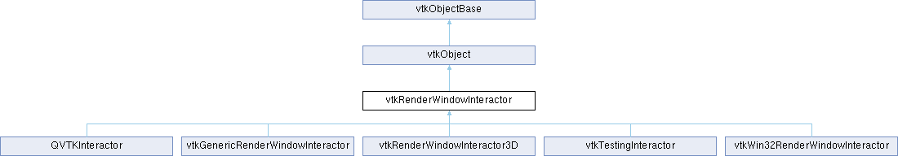

|
Etrek
|
|
Etrek
|
platform-independent render window interaction including picking and frame rate control. More...
#include <vtkRenderWindowInteractor.h>

Public Types | |
| enum | { OneShotTimer = 1 , RepeatingTimer } |
Public Member Functions | |
| vtkTypeMacro (vtkRenderWindowInteractor, vtkObject) | |
| void | PrintSelf (ostream &os, vtkIndent indent) override |
| void | UnRegister (vtkObjectBase *o) override |
| virtual void | Start () |
| virtual void | ProcessEvents () |
| vtkGetMacro (Done, bool) | |
| vtkSetMacro (Done, bool) | |
| virtual void | Enable () |
| virtual void | Disable () |
| vtkGetMacro (Enabled, int) | |
| virtual void | UpdateSize (int x, int y) |
| virtual int | CreateTimer (int timerType) |
| virtual int | DestroyTimer () |
| int | CreateRepeatingTimer (unsigned long duration) |
| int | CreateOneShotTimer (unsigned long duration) |
| int | IsOneShotTimer (int timerId) |
| unsigned long | GetTimerDuration (int timerId) |
| int | ResetTimer (int timerId) |
| int | DestroyTimer (int timerId) |
| virtual int | GetVTKTimerId (int platformTimerId) |
| virtual void | TerminateApp () |
| virtual vtkAbstractPropPicker * | CreateDefaultPicker () |
| virtual void | GetMousePosition (int *x, int *y) |
| virtual void | Render () |
| virtual int * | GetEventPositions (int pointerIndex) |
| virtual int * | GetLastEventPositions (int pointerIndex) |
| virtual void | SetEventPosition (int x, int y, int pointerIndex) |
| virtual void | SetEventPosition (int pos[2], int pointerIndex) |
| virtual void | SetEventPositionFlipY (int x, int y, int pointerIndex) |
| virtual void | SetEventPositionFlipY (int pos[2], int pointerIndex) |
| virtual vtkRenderer * | FindPokedRenderer (int, int) |
| vtkObserverMediator * | GetObserverMediator () |
| virtual void | Initialize () |
| void | ReInitialize () |
| vtkBooleanMacro (EnableRender, bool) | |
| vtkSetMacro (EnableRender, bool) | |
| vtkGetMacro (EnableRender, bool) | |
| void | SetRenderWindow (vtkRenderWindow *aren) |
| vtkGetObjectMacro (RenderWindow, vtkRenderWindow) | |
| void | SetHardwareWindow (vtkHardwareWindow *aren) |
| vtkGetObjectMacro (HardwareWindow, vtkHardwareWindow) | |
| vtkSetClampMacro (TimerDuration, unsigned long, 1, 100000) | |
| vtkGetMacro (TimerDuration, unsigned long) | |
| vtkSetMacro (TimerEventId, int) | |
| vtkGetMacro (TimerEventId, int) | |
| vtkSetMacro (TimerEventType, int) | |
| vtkGetMacro (TimerEventType, int) | |
| vtkSetMacro (TimerEventDuration, int) | |
| vtkGetMacro (TimerEventDuration, int) | |
| vtkSetMacro (TimerEventPlatformId, int) | |
| vtkGetMacro (TimerEventPlatformId, int) | |
| virtual void | SetInteractorStyle (vtkInteractorObserver *) |
| virtual vtkInteractorObserver * | GetInteractorStyle () |
| vtkSetMacro (LightFollowCamera, vtkTypeBool) | |
| vtkGetMacro (LightFollowCamera, vtkTypeBool) | |
| vtkBooleanMacro (LightFollowCamera, vtkTypeBool) | |
| vtkSetClampMacro (DesiredUpdateRate, double, 0.0001, VTK_FLOAT_MAX) | |
| vtkGetMacro (DesiredUpdateRate, double) | |
| vtkSetClampMacro (StillUpdateRate, double, 0.0001, VTK_FLOAT_MAX) | |
| vtkGetMacro (StillUpdateRate, double) | |
| vtkGetMacro (Initialized, int) | |
| virtual void | SetPicker (vtkAbstractPicker *) |
| vtkGetObjectMacro (Picker, vtkAbstractPicker) | |
| virtual void | SetPickingManager (vtkPickingManager *) |
| vtkGetObjectMacro (PickingManager, vtkPickingManager) | |
| virtual void | ExitCallback () |
| virtual void | UserCallback () |
| virtual void | StartPickCallback () |
| virtual void | EndPickCallback () |
| void | HideCursor () |
| void | ShowCursor () |
| void | FlyTo (vtkRenderer *ren, double x, double y, double z) |
| void | FlyTo (vtkRenderer *ren, double *x) |
| void | FlyToImage (vtkRenderer *ren, double x, double y) |
| void | FlyToImage (vtkRenderer *ren, double *x) |
| vtkSetClampMacro (NumberOfFlyFrames, int, 1, VTK_INT_MAX) | |
| vtkGetMacro (NumberOfFlyFrames, int) | |
| vtkSetMacro (Dolly, double) | |
| vtkGetMacro (Dolly, double) | |
| vtkGetVector2Macro (EventPosition, int) | |
| vtkGetVector2Macro (LastEventPosition, int) | |
| vtkSetVector2Macro (LastEventPosition, int) | |
| virtual void | SetEventPosition (int x, int y) |
| virtual void | SetEventPosition (int pos[2]) |
| virtual void | SetEventPositionFlipY (int x, int y) |
| virtual void | SetEventPositionFlipY (int pos[2]) |
| vtkSetMacro (AltKey, int) | |
| vtkGetMacro (AltKey, int) | |
| vtkSetMacro (ControlKey, int) | |
| vtkGetMacro (ControlKey, int) | |
| vtkSetMacro (ShiftKey, int) | |
| vtkGetMacro (ShiftKey, int) | |
| vtkSetMacro (KeyCode, char) | |
| vtkGetMacro (KeyCode, char) | |
| vtkSetMacro (RepeatCount, int) | |
| vtkGetMacro (RepeatCount, int) | |
| vtkSetStringMacro (KeySym) | |
| vtkGetStringMacro (KeySym) | |
| vtkSetMacro (PointerIndex, int) | |
| vtkGetMacro (PointerIndex, int) | |
| void | SetRotation (double rotation) |
| vtkGetMacro (Rotation, double) | |
| vtkGetMacro (LastRotation, double) | |
| void | SetScale (double scale) |
| vtkGetMacro (Scale, double) | |
| vtkGetMacro (LastScale, double) | |
| void | SetTranslation (double val[2]) |
| vtkGetVector2Macro (Translation, double) | |
| vtkGetVector2Macro (LastTranslation, double) | |
| void | SetEventInformation (int x, int y, int ctrl, int shift, char keycode, int repeatcount, const char *keysym, int pointerIndex) |
| void | SetEventInformation (int x, int y, int ctrl=0, int shift=0, char keycode=0, int repeatcount=0, const char *keysym=nullptr) |
| void | SetEventInformationFlipY (int x, int y, int ctrl, int shift, char keycode, int repeatcount, const char *keysym, int pointerIndex) |
| void | SetEventInformationFlipY (int x, int y, int ctrl=0, int shift=0, char keycode=0, int repeatcount=0, const char *keysym=nullptr) |
| void | SetKeyEventInformation (int ctrl=0, int shift=0, char keycode=0, int repeatcount=0, const char *keysym=nullptr) |
| vtkSetVector2Macro (Size, int) | |
| vtkGetVector2Macro (Size, int) | |
| vtkSetVector2Macro (EventSize, int) | |
| vtkGetVector2Macro (EventSize, int) | |
| vtkSetMacro (UseTDx, bool) | |
| vtkGetMacro (UseTDx, bool) | |
| virtual void | MouseMoveEvent () |
| virtual void | RightButtonPressEvent () |
| virtual void | RightButtonReleaseEvent () |
| virtual void | LeftButtonPressEvent () |
| virtual void | LeftButtonReleaseEvent () |
| virtual void | MiddleButtonPressEvent () |
| virtual void | MiddleButtonReleaseEvent () |
| virtual void | MouseWheelForwardEvent () |
| virtual void | MouseWheelBackwardEvent () |
| virtual void | MouseWheelLeftEvent () |
| virtual void | MouseWheelRightEvent () |
| virtual void | ExposeEvent () |
| virtual void | ConfigureEvent () |
| virtual void | EnterEvent () |
| virtual void | LeaveEvent () |
| virtual void | KeyPressEvent () |
| virtual void | KeyReleaseEvent () |
| virtual void | CharEvent () |
| virtual void | ExitEvent () |
| virtual void | FourthButtonPressEvent () |
| virtual void | FourthButtonReleaseEvent () |
| virtual void | FifthButtonPressEvent () |
| virtual void | FifthButtonReleaseEvent () |
| virtual void | StartPinchEvent () |
| virtual void | PinchEvent () |
| virtual void | EndPinchEvent () |
| virtual void | StartRotateEvent () |
| virtual void | RotateEvent () |
| virtual void | EndRotateEvent () |
| virtual void | StartPanEvent () |
| virtual void | PanEvent () |
| virtual void | EndPanEvent () |
| virtual void | TapEvent () |
| virtual void | LongTapEvent () |
| virtual void | SwipeEvent () |
| vtkSetMacro (RecognizeGestures, bool) | |
| vtkGetMacro (RecognizeGestures, bool) | |
| vtkGetMacro (PointersDownCount, int) | |
| void | ClearContact (size_t contactID) |
| int | GetPointerIndexForContact (size_t contactID) |
| int | GetPointerIndexForExistingContact (size_t contactID) |
| bool | IsPointerIndexSet (int i) |
| void | ClearPointerIndex (int i) |
| virtual vtkCommand::EventIds | GetCurrentGesture () const |
| virtual void | SetCurrentGesture (vtkCommand::EventIds eid) |
| Public Member Functions inherited from vtkObject | |
| vtkBaseTypeMacro (vtkObject, vtkObjectBase) | |
| virtual void | DebugOn () |
| virtual void | DebugOff () |
| bool | GetDebug () |
| void | SetDebug (bool debugFlag) |
| virtual void | Modified () |
| virtual vtkMTimeType | GetMTime () |
| void | RemoveObserver (unsigned long tag) |
| void | RemoveObservers (unsigned long event) |
| void | RemoveObservers (const char *event) |
| void | RemoveAllObservers () |
| vtkTypeBool | HasObserver (unsigned long event) |
| vtkTypeBool | HasObserver (const char *event) |
| vtkTypeBool | InvokeEvent (unsigned long event) |
| vtkTypeBool | InvokeEvent (const char *event) |
| std::string | GetObjectDescription () const override |
| unsigned long | AddObserver (unsigned long event, vtkCommand *, float priority=0.0f) |
| unsigned long | AddObserver (const char *event, vtkCommand *, float priority=0.0f) |
| vtkCommand * | GetCommand (unsigned long tag) |
| void | RemoveObserver (vtkCommand *) |
| void | RemoveObservers (unsigned long event, vtkCommand *) |
| void | RemoveObservers (const char *event, vtkCommand *) |
| vtkTypeBool | HasObserver (unsigned long event, vtkCommand *) |
| vtkTypeBool | HasObserver (const char *event, vtkCommand *) |
| template<class U, class T> | |
| unsigned long | AddObserver (unsigned long event, U observer, void(T::*callback)(), float priority=0.0f) |
| template<class U, class T> | |
| unsigned long | AddObserver (unsigned long event, U observer, void(T::*callback)(vtkObject *, unsigned long, void *), float priority=0.0f) |
| template<class U, class T> | |
| unsigned long | AddObserver (unsigned long event, U observer, bool(T::*callback)(vtkObject *, unsigned long, void *), float priority=0.0f) |
| vtkTypeBool | InvokeEvent (unsigned long event, void *callData) |
| vtkTypeBool | InvokeEvent (const char *event, void *callData) |
| virtual void | SetObjectName (const std::string &objectName) |
| virtual std::string | GetObjectName () const |
| Public Member Functions inherited from vtkObjectBase | |
| const char * | GetClassName () const |
| virtual vtkTypeBool | IsA (const char *name) |
| virtual vtkIdType | GetNumberOfGenerationsFromBase (const char *name) |
| virtual void | Delete () |
| virtual void | FastDelete () |
| void | InitializeObjectBase () |
| void | Print (ostream &os) |
| void | Register (vtkObjectBase *o) |
| int | GetReferenceCount () |
| void | SetReferenceCount (int) |
| bool | GetIsInMemkind () const |
| virtual void | PrintHeader (ostream &os, vtkIndent indent) |
| virtual void | PrintTrailer (ostream &os, vtkIndent indent) |
| virtual bool | UsesGarbageCollector () const |
Static Public Member Functions | |
| static vtkRenderWindowInteractor * | New () |
| Static Public Member Functions inherited from vtkObject | |
| static vtkObject * | New () |
| static void | BreakOnError () |
| static void | SetGlobalWarningDisplay (vtkTypeBool val) |
| static void | GlobalWarningDisplayOn () |
| static void | GlobalWarningDisplayOff () |
| static vtkTypeBool | GetGlobalWarningDisplay () |
| Static Public Member Functions inherited from vtkObjectBase | |
| static vtkTypeBool | IsTypeOf (const char *name) |
| static vtkIdType | GetNumberOfGenerationsFromBaseType (const char *name) |
| static vtkObjectBase * | New () |
| static void | SetMemkindDirectory (const char *directoryname) |
| static bool | GetUsingMemkind () |
Static Public Attributes | |
| static bool | InteractorManagesTheEventLoop |
Protected Member Functions | |
| virtual vtkPickingManager * | CreateDefaultPickingManager () |
| void | GrabFocus (vtkCommand *mouseEvents, vtkCommand *keypressEvents=nullptr) |
| void | ReleaseFocus () |
| virtual void | StartEventLoop () |
| virtual void | RecognizeGesture (vtkCommand::EventIds) |
| virtual int | InternalCreateTimer (int timerId, int timerType, unsigned long duration) |
| virtual int | InternalDestroyTimer (int platformTimerId) |
| int | GetCurrentTimerId () |
| Protected Member Functions inherited from vtkObject | |
| void | RegisterInternal (vtkObjectBase *, vtkTypeBool check) override |
| void | UnRegisterInternal (vtkObjectBase *, vtkTypeBool check) override |
| void | InternalGrabFocus (vtkCommand *mouseEvents, vtkCommand *keypressEvents=nullptr) |
| void | InternalReleaseFocus () |
| Protected Member Functions inherited from vtkObjectBase | |
| virtual void | ReportReferences (vtkGarbageCollector *) |
| vtkObjectBase (const vtkObjectBase &) | |
| void | operator= (const vtkObjectBase &) |
Protected Attributes | |
| vtkRenderWindow * | RenderWindow |
| vtkHardwareWindow * | HardwareWindow |
| vtkSmartPointer< vtkInteractorObserver > | InteractorStyle |
| vtkAbstractPicker * | Picker |
| vtkPickingManager * | PickingManager |
| bool | Done |
| int | Initialized |
| int | Enabled |
| bool | EnableRender |
| int | Style |
| vtkTypeBool | LightFollowCamera |
| int | ActorMode |
| double | DesiredUpdateRate |
| double | StillUpdateRate |
| int | AltKey |
| int | ControlKey |
| int | ShiftKey |
| char | KeyCode |
| double | Rotation |
| double | LastRotation |
| double | Scale |
| double | LastScale |
| double | Translation [2] |
| double | LastTranslation [2] |
| int | RepeatCount |
| char * | KeySym |
| int | EventPosition [2] |
| int | LastEventPosition [2] |
| int | EventSize [2] |
| int | Size [2] |
| int | TimerEventId |
| int | TimerEventType |
| int | TimerEventDuration |
| int | TimerEventPlatformId |
| int | EventPositions [VTKI_MAX_POINTERS][2] |
| int | LastEventPositions [VTKI_MAX_POINTERS][2] |
| int | PointerIndex |
| size_t | PointerIndexLookup [VTKI_MAX_POINTERS] |
| int | NumberOfFlyFrames |
| double | Dolly |
| vtkObserverMediator * | ObserverMediator |
| vtkTimerIdMap * | TimerMap |
| unsigned long | TimerDuration |
| int | HandleEventLoop |
| bool | UseTDx |
| bool | RecognizeGestures |
| int | PointersDownCount |
| int | PointersDown [VTKI_MAX_POINTERS] |
| int | StartingEventPositions [VTKI_MAX_POINTERS][2] |
| vtkCommand::EventIds | CurrentGesture |
| Protected Attributes inherited from vtkObject | |
| bool | Debug |
| vtkTimeStamp | MTime |
| vtkSubjectHelper * | SubjectHelper |
| std::string | ObjectName |
| Protected Attributes inherited from vtkObjectBase | |
| std::atomic< int32_t > | ReferenceCount |
| vtkWeakPointerBase ** | WeakPointers |
Friends | |
| class | vtkInteractorEventRecorder |
| class | vtkInteractorObserver |
| struct | vtkTimerStruct |
Additional Inherited Members | |
| Static Protected Member Functions inherited from vtkObjectBase | |
| static vtkMallocingFunction | GetCurrentMallocFunction () |
| static vtkReallocingFunction | GetCurrentReallocFunction () |
| static vtkFreeingFunction | GetCurrentFreeFunction () |
| static vtkFreeingFunction | GetAlternateFreeFunction () |
platform-independent render window interaction including picking and frame rate control.
vtkRenderWindowInteractor provides a platform-independent interaction mechanism for mouse/key/time events. It serves as a base class for platform-dependent implementations that handle routing of mouse/key/timer messages to vtkInteractorObserver and its subclasses. vtkRenderWindowInteractor also provides controls for picking, rendering frame rate, and headlights.
vtkRenderWindowInteractor has changed from previous implementations and now serves only as a shell to hold user preferences and route messages to vtkInteractorStyle. Callbacks are available for many events. Platform specific subclasses should provide methods for manipulating timers, TerminateApp, and an event loop if required via Initialize/Start/Enable/Disable.
| void vtkRenderWindowInteractor::ClearContact | ( | size_t | contactID | ) |
Most multitouch systems use persistent contact/pointer ids to track events/motion during multitouch events. We keep an array that maps these system dependent contact ids to our pointer index These functions return -1 if the ID is not found or if there is no more room for contacts
|
virtual |
Create default picker. Used to create one when none is specified. Default is an instance of vtkPropPicker.
|
protectedvirtual |
Create default pickingManager. Used to create one when none is specified. Default is an instance of vtkPickingManager.
| int vtkRenderWindowInteractor::CreateOneShotTimer | ( | unsigned long | duration | ) |
Create a one shot timer, with the specified duration (in milliseconds).
| int vtkRenderWindowInteractor::CreateRepeatingTimer | ( | unsigned long | duration | ) |
Create a repeating timer, with the specified duration (in milliseconds).
|
virtual |
This class provides two groups of methods for manipulating timers. The first group (CreateTimer(timerType) and DestroyTimer()) implicitly use an internal timer id (and are present for backward compatibility). The second group (CreateRepeatingTimer(long),CreateOneShotTimer(long), ResetTimer(int),DestroyTimer(int)) use timer ids so multiple timers can be independently managed. In the first group, the CreateTimer() method takes an argument indicating whether the timer is created the first time (timerType==VTKI_TIMER_FIRST) or whether it is being reset (timerType==VTKI_TIMER_UPDATE). (In initial implementations of VTK this was how one shot and repeating timers were managed.) In the second group, the create methods take a timer duration argument (in milliseconds) and return a timer id. Thus the ResetTimer(timerId) and DestroyTimer(timerId) methods take this timer id and operate on the timer as appropriate. Make sure you run Initialize() before creating the timer in order for it to work.
| int vtkRenderWindowInteractor::DestroyTimer | ( | int | timerId | ) |
Destroy the timer specified by timerId.
|
inlinevirtual |
Enable/Disable interactions. By default interactors are enabled when initialized. Initialize() must be called prior to enabling/disabling interaction. These methods are used when a window/widget is being shared by multiple renderers and interactors. This allows a "modal" display where one interactor is active when its data is to be displayed and all other interactors associated with the widget are disabled when their data is not displayed.
Reimplemented in vtkRenderWindowInteractor3D, and vtkWin32RenderWindowInteractor.
|
virtual |
These methods correspond to the Exit, User and Pick callbacks. They allow for the Style to invoke them.
Reimplemented in vtkWin32RenderWindowInteractor.
|
virtual |
When an event occurs, we must determine which Renderer the event occurred within, since one RenderWindow may contain multiple renderers.
| void vtkRenderWindowInteractor::FlyTo | ( | vtkRenderer * | ren, |
| double | x, | ||
| double | y, | ||
| double | z ) |
|
virtual |
Get the current gesture that was recognized when handling multitouch and VR events.
|
inlinevirtual |
Get the current position of the mouse.
| vtkObserverMediator * vtkRenderWindowInteractor::GetObserverMediator | ( | ) |
Return the object used to mediate between vtkInteractorObservers contending for resources. Multiple interactor observers will often request different resources (e.g., cursor shape); the mediator uses a strategy to provide the resource based on priority of the observer plus the particular request (default versus non-default cursor shape).
| unsigned long vtkRenderWindowInteractor::GetTimerDuration | ( | int | timerId | ) |
Get the duration (in milliseconds) for the specified timerId.
|
virtual |
Get the VTK timer ID that corresponds to the supplied platform ID.
| void vtkRenderWindowInteractor::HideCursor | ( | ) |
Hide or show the mouse cursor, it is nice to be able to hide the default cursor if you want VTK to display a 3D cursor instead.
|
virtual |
Prepare for handling events and set the Enabled flag to true. This will be called automatically by Start() if the interactor is not initialized, but it can be called manually if you need to perform any operations between initialization and the start of the event loop.
Reimplemented in QVTKInteractor, and vtkWin32RenderWindowInteractor.
|
protectedvirtual |
Internal methods for creating and destroying timers that must be implemented by subclasses. InternalCreateTimer() returns a platform-specific timerId and InternalDestroyTimer() returns non-zero value on success.
Reimplemented in QVTKInteractor, vtkGenericRenderWindowInteractor, and vtkWin32RenderWindowInteractor.
| int vtkRenderWindowInteractor::IsOneShotTimer | ( | int | timerId | ) |
Query whether the specified timerId is a one shot timer.
|
virtual |
Reimplemented in vtkRenderWindowInteractor3D.
|
virtual |
Fire various events. SetEventInformation should be called just prior to calling any of these methods. These methods will Invoke the corresponding vtk event.
|
overridevirtual |
Methods invoked by print to print information about the object including superclasses. Typically not called by the user (use Print() instead) but used in the hierarchical print process to combine the output of several classes.
Reimplemented from vtkObject.
Reimplemented in vtkRenderWindowInteractor3D, vtkTestingInteractor, and vtkWin32RenderWindowInteractor.
|
inlinevirtual |
Process all user-interaction, timer events and return. If there are no events, this method returns immediately. This method is implemented only on desktop (macOS, linux, windows) and WebAssembly (SDL2). It is not implemented on iOS and Android platforms.
Reimplemented in vtkWin32RenderWindowInteractor.
|
virtual |
Render the scene. Just pass the render call on to the associated vtkRenderWindow.
| int vtkRenderWindowInteractor::ResetTimer | ( | int | timerId | ) |
Reset the specified timer.
|
virtual |
Reimplemented in vtkRenderWindowInteractor3D.
|
inline |
Set all the event information in one call.
|
inline |
Calls SetEventInformation, but flips the Y based on the current Size[1] value (i.e. y = this->Size[1] - y - 1).
| void vtkRenderWindowInteractor::SetHardwareWindow | ( | vtkHardwareWindow * | aren | ) |
Set/Get the hardware window being controlled by this object. For opengl the hardware window is not used as the opengl subclasses of RenderWindow provide the functionality.
|
virtual |
External switching between joystick/trackball/new? modes. Initial value is a vtkInteractorStyleSwitch object.
|
inline |
Set all the keyboard-related event information in one call.
|
virtual |
Set/Get the object used to perform pick operations. In order to pick instances of vtkProp, the picker must be a subclass of vtkAbstractPropPicker, meaning that it can identify a particular instance of vtkProp.
|
virtual |
Set the picking manager. Set/Get the object used to perform operations through the interactor By default, a valid but disabled picking manager is instantiated.
| void vtkRenderWindowInteractor::SetRenderWindow | ( | vtkRenderWindow * | aren | ) |
Set/Get the rendering window being controlled by this object.
| void vtkRenderWindowInteractor::SetRotation | ( | double | rotation | ) |
Set/get the rotation for the gesture in degrees, update LastRotation
| void vtkRenderWindowInteractor::SetScale | ( | double | scale | ) |
Set/get the scale for the gesture, updates LastScale
| void vtkRenderWindowInteractor::SetTranslation | ( | double | val[2] | ) |
Set/get the translation for pan/swipe gestures, update LastTranslation
|
virtual |
Start the event loop. This is provided so that you do not have to implement your own event loop. You still can use your own event loop if you want.
Reimplemented in QVTKInteractor, and vtkTestingInteractor.
|
inlineprotectedvirtual |
Run the event loop (does not return until TerminateApp is called).
Reimplemented in vtkWin32RenderWindowInteractor.
|
virtual |
Fire various gesture based events. These methods will Invoke the corresponding vtk event.
|
inlinevirtual |
This function is called on 'q','e' keypress if exitmethod is not specified and should be overridden by platform dependent subclasses to provide a termination procedure if one is required.
Reimplemented in QVTKInteractor, and vtkWin32RenderWindowInteractor.
|
overridevirtual |
This Method detects loops of RenderWindow-Interactor, so objects are freed properly.
Reimplemented from vtkObjectBase.
|
virtual |
When the event loop notifies the interactor that the window size has changed, this method is called to update the Size of the interactor and its vtkRenderWindow.
The interactor will fire vtkCommand::ConfigureEvent after the size has updated.
| vtkRenderWindowInteractor::vtkBooleanMacro | ( | EnableRender | , |
| bool | ) |
Enable/Disable whether vtkRenderWindowInteractor::Render() calls this->RenderWindow->Render().
| vtkRenderWindowInteractor::vtkGetMacro | ( | Done | , |
| bool | ) |
Is the interactor loop done
| vtkRenderWindowInteractor::vtkGetMacro | ( | Initialized | , |
| int | ) |
See whether interactor has been initialized yet. Default is 0.
| vtkRenderWindowInteractor::vtkGetMacro | ( | PointersDownCount | , |
| int | ) |
When handling gestures you can query this value to determine how many pointers are down for the gesture this is useful for pan gestures for example
| vtkRenderWindowInteractor::vtkGetVector2Macro | ( | EventPosition | , |
| int | ) |
Set/Get information about the current event. The current x,y position is in the EventPosition, and the previous event position is in LastEventPosition, updated automatically each time EventPosition is set using its Set() method. Mouse positions are measured in pixels. The other information is about key board input.
| vtkRenderWindowInteractor::vtkSetClampMacro | ( | DesiredUpdateRate | , |
| double | , | ||
| 0. | 0001, | ||
| VTK_FLOAT_MAX | ) |
Set/Get the desired update rate. This is used by vtkLODActor's to tell them how quickly they need to render. This update is in effect only when the camera is being rotated, or zoomed. When the interactor is still, the StillUpdateRate is used instead. The default is 15.
| vtkRenderWindowInteractor::vtkSetClampMacro | ( | NumberOfFlyFrames | , |
| int | , | ||
| 1 | , | ||
| VTK_INT_MAX | ) |
Set the number of frames to fly to when FlyTo is invoked.
| vtkRenderWindowInteractor::vtkSetClampMacro | ( | StillUpdateRate | , |
| double | , | ||
| 0. | 0001, | ||
| VTK_FLOAT_MAX | ) |
Set/Get the desired update rate when movement has stopped. For the non-still update rate, see the SetDesiredUpdateRate method. The default is 0.0001
| vtkRenderWindowInteractor::vtkSetClampMacro | ( | TimerDuration | , |
| unsigned long | , | ||
| 1 | , | ||
| 100000 | ) |
Specify the default timer interval (in milliseconds). (This is used in conjunction with the timer methods described previously, e.g., CreateTimer() uses this value; and CreateRepeatingTimer(duration) and CreateOneShotTimer(duration) use the default value if the parameter "duration" is less than or equal to zero.) Care must be taken when adjusting the timer interval from the default value of 10 milliseconds–it may adversely affect the interactors.
| vtkRenderWindowInteractor::vtkSetMacro | ( | AltKey | , |
| int | ) |
Set/get whether alt modifier key was pressed. On macOS, this corresponds to the Option key which may have unexpected effect on the KeyCode and KeySym.
AltGr does NOT trigger this modifier.
| vtkRenderWindowInteractor::vtkSetMacro | ( | ControlKey | , |
| int | ) |
Set/get whether control modifier key was pressed. On macOS, pressing either Cmd or Control turn this modifier on.
| vtkRenderWindowInteractor::vtkSetMacro | ( | Dolly | , |
| double | ) |
Set the total Dolly value to use when flying to (FlyTo()) a specified point. Negative values fly away from the point.
| vtkRenderWindowInteractor::vtkSetMacro | ( | KeyCode | , |
| char | ) |
Set/get the unicode value for the key that was pressed, as an 8-bit char value. This restricts the value to the Basic Latin and Latin1 blocks of unicode.
Since the 'char' type may be signed, one should cast to 'unsigned char' before retrieving the code value.
unsigned char keyCode = static_cast<unsigned char>(rwi->GetKeyCode())
Please note KeyCode is impacted by modifiers:
"A" -> 'a' "Shift" + "A" -> 'A' "Ctrl" + "A" -> 1 "Alt" + "A" -> 'a'
The behavior with Control modifier is related to C0 and C1 control codes.
Please note KeyCode IS NOT reliable across platforms, especially for special characters with modifiers. Using KeySym should be more reliable.
Default is 0.
| vtkRenderWindowInteractor::vtkSetMacro | ( | LightFollowCamera | , |
| vtkTypeBool | ) |
Turn on/off the automatic repositioning of lights as the camera moves. Default is On.
| vtkRenderWindowInteractor::vtkSetMacro | ( | PointerIndex | , |
| int | ) |
Set/get the index of the most recent pointer to have an event
| vtkRenderWindowInteractor::vtkSetMacro | ( | RecognizeGestures | , |
| bool | ) |
Convert multitouch events into gestures. When this is on (its default) multitouch events received by this interactor will be converted into gestures by VTK. If turned off the raw multitouch events will be passed down.
| vtkRenderWindowInteractor::vtkSetMacro | ( | RepeatCount | , |
| int | ) |
Set/get the repeat count for the key or mouse event. This specifies how many times a key has been pressed.
| vtkRenderWindowInteractor::vtkSetMacro | ( | ShiftKey | , |
| int | ) |
Set/get whether shift modifier key was pressed.
| vtkRenderWindowInteractor::vtkSetMacro | ( | TimerEventId | , |
| int | ) |
These methods are used to communicate information about the currently firing CreateTimerEvent or DestroyTimerEvent. The caller of CreateTimerEvent sets up TimerEventId, TimerEventType and TimerEventDuration. The observer of CreateTimerEvent should set up an appropriate platform specific timer based on those values and set the TimerEventPlatformId before returning. The caller of DestroyTimerEvent sets up TimerEventPlatformId. The observer of DestroyTimerEvent should simply destroy the platform specific timer created by CreateTimerEvent. See vtkGenericRenderWindowInteractor's InternalCreateTimer and InternalDestroyTimer for an example.
| vtkRenderWindowInteractor::vtkSetMacro | ( | UseTDx | , |
| bool | ) |
Use a 3DConnexion device. Initial value is false. If VTK is not build with the TDx option, this is no-op. If VTK is build with the TDx option, and a device is not connected, a warning is emitted. It is must be called before the first Render to be effective, otherwise it is ignored.
| vtkRenderWindowInteractor::vtkSetStringMacro | ( | KeySym | ) |
Set/get the key symbol for the key that was pressed. This is the key symbol as defined by the relevant X headers (xlib/X11/keysymdef.h). On X based platforms this corresponds to the installed X server, whereas on other platforms the native key codes are translated into a string representation using VTK defined tables.
Please note the KeySym is impacted by modifiers:
"A" -> "a" "Shift" + "A" -> "A" "Alt" + "A" -> "a" "Ctrl" + "A" -> "a"
Please note KeySym may NOT be fully reliable across platforms, especially for special characters with modifiers. Please check the actual KeySym on supported platform before relying on it. However, KeySym is intended to always correspond to the key the user intended to press, even across layouts and platforms.
Default is nullptr.
| vtkRenderWindowInteractor::vtkSetVector2Macro | ( | Size | , |
| int | ) |
This methods sets the Size ivar of the interactor without actually changing the size of the window. Normally application programmers would use UpdateSize if anything. This is useful for letting someone else change the size of the rendering window and just letting the interactor know about the change. The current event width/height (if any) is in EventSize (Expose event, for example). Window size is measured in pixels.
|
friend |
These methods allow the interactor to control which events are processed. When the GrabFocus() method is called, then only events that the supplied vtkCommands have registered are invoked. (This method is typically used by widgets, i.e., subclasses of vtkInteractorObserver, to grab events once an event sequence begins.) Note that the friend declaration is done here to avoid doing so in the superclass vtkObject.
|
static |
This flag is useful when you are integrating VTK in a larger system. In such cases, an application can lock up if the Start() method in vtkRenderWindowInteractor processes events indefinitely without giving the system a chance to execute anything. The default value for this flag is true. It currently only affects VTK webassembly applications.
As an example with webassembly in the browser through emscripten SDK:
|
protected |
Widget mediators are used to resolve contention for cursors and other resources.